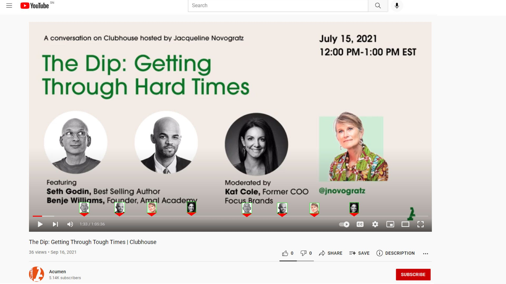
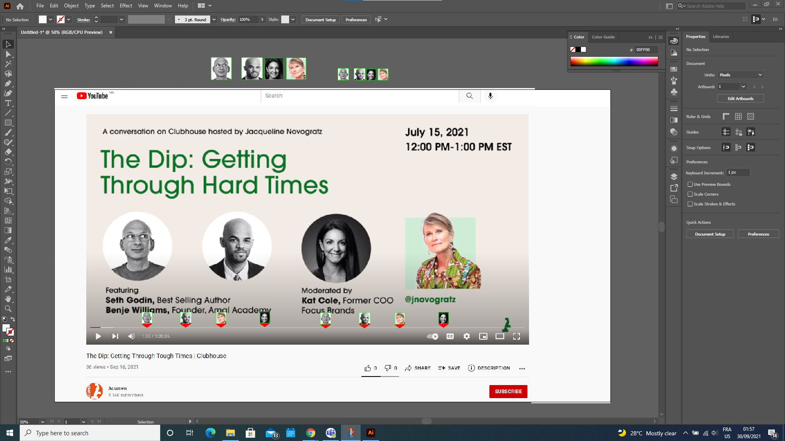

This other Youtube like feature idea
Thank you Jacqueline Novogratz, You highlighted this feature to me

I am using Youtube as an example but this feature is about every video player that is built to be embedded into a website for playing videos that come from recorded clubhouse conversations or the kinds of video that I was writing about in this article entitled AI for video production (here). These kinds of videos are mainly about people discussing a given topic. Sometimes it’s a discussion of two persons but often it’s more than two involved in the conversation but usually, we watch these kinds of videos because of someone, in my case that was yesterday when was listening to this recorded clubhouse video because of Seth Godin and at some extend Jacqueline Novogratz of acumen even if I ended to discover that Benje and kat were also great people worth listening. I consumed the whole conversation but pressed by the time I felt that I needed to listen to Seth only opinion, not others but I had not the possibility for skipping some portions of the video and going directly to the portion that interested me like how I am able to do it in this website that I am ashamed to divulge here. This conversation I am talking about is here
but the feature of the video player that I am writing about is a feature that automatically adds mark points to the timeline with the image of the person who is talking starting from these mark points. Then with this possibility, I was able to gain time and listen only to Seth Godin's opinions. I should agree that it is difficult for those who will be skipped because it is hard to live with the idea of having others not caring about you. I wish that it will not happen to you and others because it is a hard situation to live with but Time on the internet is really scarce like how it is scarcer in real life that’s why we technology builders should always give internet’s users more filtering power and that’s why this feature that I am writing about is important for a platform like youtube and for websites to adopt it because it benefits all internet’s users.

If you could build this kind of video player please go build it because the world needs it. In my part, I will try to build it but I am asking myself what I will gonna do with this project about this C++ compiler that I was writing about in my today’s morning page and in this video that I have published on Youtube months ago as well as this other youtube feature. I hope that you have seen how by adding this feature in my stack of things to be done I penalized another thing that was also planned to be also done because we can’t scale time like how we scale tech-enabled projects.
PS: I sincerely feel that I should not spend more than 24 hours without writing and publishing here for giving you the opportunity to read and hoping that maybe you will something interesting in it that will ease your journey and help you achieve your goal. I hope you also wish this for me.
As for showing you that I have personally done the job please consider this screenshot of my artboard or desktop.
